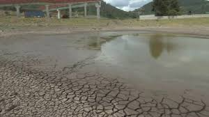
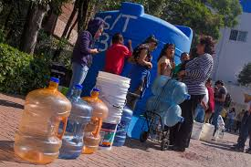
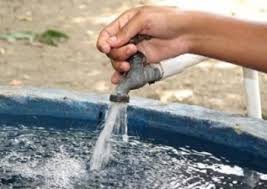

Inicio
La escasez de agua es uno de los problemas más críticos que enfrenta el mundo hoy en día. A continuación, exploraremos sus causas, consecuencias y posibles soluciones.
Causas
Existen varias causas de la escasez de agua, incluyendo:
1.- El cambio climático el cual afecta los patrones de precipitación, lo que puede resultar en sequías prolongadas en algunas regiones y en inundaciones en otras.
2.- La contaminación del agua, debido a desechos industriales, agrícolas y domésticos, reduce la cantidad de agua potable disponible.
3.- La sobreexplotación de acuíferos y otros recursos hídricos puede agotar las fuentes de agua, especialmente en áreas con poca recarga natural.
Consecuencias
Las consecuencias de la escasez de agua son graves y afectan tanto a humanos como a ecosistemas:
1.- La falta de acceso a agua limpia puede provocar enfermedades como diarrea, cólera y otras infecciones.
2.- Los ecosistemas acuáticos y terrestres dependen del agua. La escasez de agua puede llevar a la pérdida de biodiversidad y a la degradación de hábitats naturales.
3.- La agricultura, la industria y otras actividades económicas pueden verse severamente afectadas por la falta de agua, resultando en pérdidas económicas y desempleo.
Soluciones
Existen varias soluciones para abordar la escasez de agua:
La conservación del agua incluye prácticas como almacenar el agua durante el baño, la reducción de pérdidas en las redes de distribución y el uso responsable del agua en el hogar.
La reutilización de agua implica tratar y reutilizar aguas residuales para fines no potables, como el riego agrícola y la recarga de acuíferos.
Las tecnologías avanzadas, como la desalinización y la recolección de agua de lluvia, pueden proporcionar fuentes alternativas de agua.